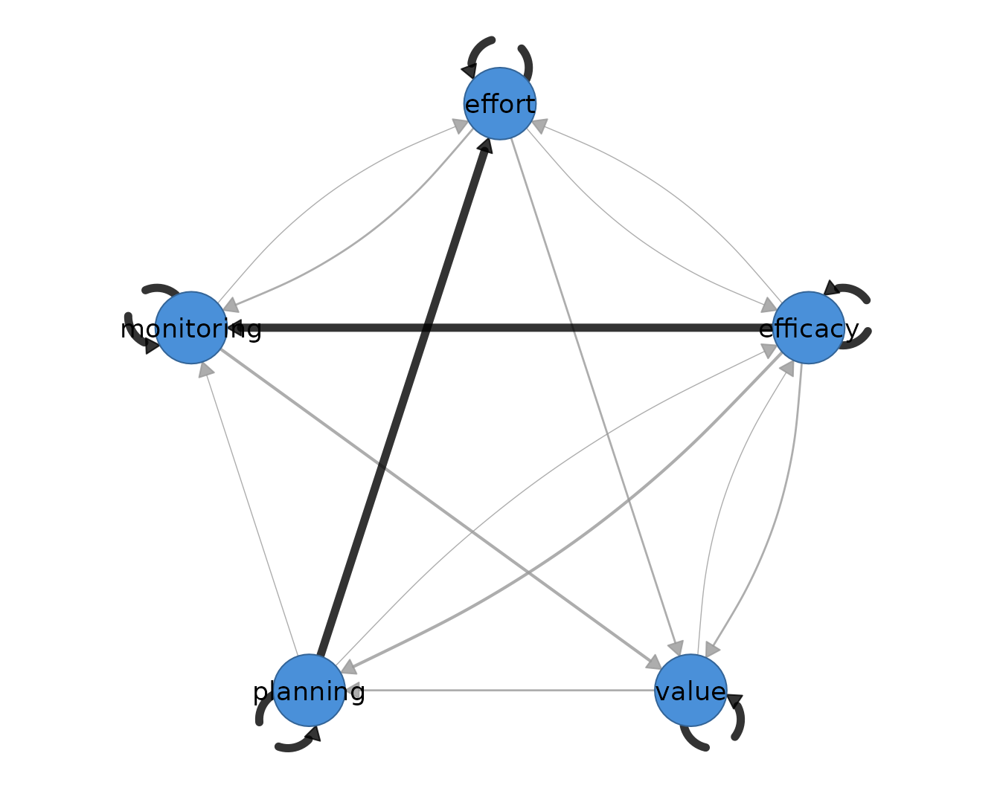

11. Package overview: a clean-room methods tour
clean-room-methods.RmdIntroduction
Idiographic science treats the individual — not the group average — as the unit of analysis (Molenaar, 2004). Intensive longitudinal designs such as experience sampling (ESM), ecological momentary assessment (EMA), and diary studies produce the many-occasions-per-person data this paradigm requires, and dynamic network models translate those repeated measurements into interpretable structures: temporal networks of lagged, directed effects, contemporaneous networks of same-occasion partial associations, and between-person networks of stable individual differences (Epskamp, Waldorp, Mõttus, & Borsboom, 2018).
The idiographic package implements the principal
estimators of this literature — ordinary and regularized vector
autoregression (VAR), multilevel VAR, Bayesian dynamic structural
equation modeling (DSEM), unified structural equation modeling (uSEM),
and Group Iterative Multiple Model Estimation (GIMME) — together with
the methodological workflow that surrounds them: preprocessing audits,
rolling-window (time-varying) estimation, and structured model
comparison. Every estimator is one verb with named arguments; every
result answers questions through the same tidy accessors:
edges(), nodes(), coefs(),
matrices(), summary(), and
plot().
Clean-room implementation
All estimators in idiographic are clean-room
reimplementations: each was written from the published
algorithm — the estimating equations, model specification, and selection
criteria described in the methodological literature — rather than by
wrapping an existing package. Correctness is then established
empirically, by demonstrating numerical equivalence against the
reference implementation on shared data:
| Estimator | Method | Reference implementation | Agreement |
|---|---|---|---|
graphical_var() |
Regularized graphical VAR (graphical lasso + EBIC) | graphicalVAR |
~1e-10 |
build_mlvar() |
Two-step multilevel VAR (lmer fixed effects) |
mlVAR (estimator = "lmer") |
machine precision |
build_mlvar_bayes() |
Bayesian multilevel VAR / DSEM | Mplus 9 DSEM; independent Stan/JAGS | Monte Carlo error |
build_var_bayes() |
Bayesian VAR(1), Normal-inverse-Wishart | Mplus 9 ESTIMATOR = BAYES
|
~1e-3 |
build_gimme() |
GIMME group + individual search |
gimme (its own bundled data) |
exact path sets and coefficients |
| internal graphical lasso | Friedman, Hastie, & Tibshirani (2008) |
glasso (KKT-checked) |
~1e-11 |
Two properties follow from this design. First, the runtime dependency
footprint is minimal — the package imports only stats,
utils, lme4, and lavaan; the
reference packages are needed solely to regenerate validation fixtures.
Second, the Bayesian DSEM estimator reproduces the two-level Bayesian
VAR with latent mean centering that Mplus fits under
TYPE = TWOLEVEL; ESTIMATOR = BAYES (Asparouhov, Hamaker,
& Muthén, 2018) without an Mplus installation.
The empirical example
Throughout this vignette we analyze the self-regulated learning (SRL) experience-sampling data from Chapter 20 of the Learning Analytics Methods book: 36 students each reported nine SRL indicators on 156 occasions. The panel is imported directly from the lamethods data repository:
library(rio)
library(idiographic)
df <- import("https://github.com/lamethods/data2/raw/main/srl/srl.RDS")
nrow(df)
#> [1] 5616
length(unique(df$name))
#> [1] 36Rows arrive ordered by student and, within student, by occasion, so
the estimators form lag-1 pairs from consecutive rows within each
id — no manual sorting or indexing is required. (The same
panel, tidied to the nine SRL indicators with an explicit
day occasion index, ships with the package as
data(srl) for offline use.)
We follow the package convention of a focused five-indicator set so
printed networks stay readable, and use Grace for the
single-person analyses:
vars <- c("efficacy", "value", "planning", "monitoring", "effort")
has_cograph <- requireNamespace("cograph", quietly = TRUE)1. Preprocessing audit — audit_preprocess()
Dynamic network estimates are only as sound as the lag-1 design
behind them. audit_preprocess() constructs the exact lagged
design the estimators use and reports compliance, missingness,
day-boundary drops, linear trends, near-unit-root persistence, and
split-half drift — making the modeling input explicit before any model
is fit.
audit <- audit_preprocess(df, vars = vars, id = "name")
audit
#> Idiographic Preprocessing Audit
#> Variables: 5 (efficacy, value, planning, monitoring, effort)
#> Ordered rows: 5616
#> Retained pairs: 5548
#> Trend flags: 10
#> High AR flags: 0
#> Drift flags: 1
#> Unit-root risk: 0
#> Zero variance: 0
#> Tables: x$pairs | x$counts | x$diagnosticsThe subject-by-variable diagnostics are a tidy table:
head(as.data.frame(audit))
#> subject variable n n_observed missing_prop mean sd
#> 1 Aisha efficacy 156 156 0 -4.105373e-18 0.7864311
#> 2 Aisha value 156 156 0 -4.863620e-18 0.7808769
#> 3 Aisha planning 156 156 0 -1.790984e-17 0.7960943
#> 4 Aisha monitoring 156 156 0 -5.486775e-17 0.8119451
#> 5 Aisha effort 156 156 0 3.560353e-17 0.6716902
#> 6 Alice efficacy 156 156 0 -2.352076e-17 0.7707262
#> trend_slope trend_t trend_p ar1 ar1_t ar1_p
#> 1 0.0020047874 1.4387618 0.15224731 0.17105142 2.1197072 0.03564446
#> 2 0.0028145228 2.0480445 0.04225412 0.19466449 2.4477593 0.01550576
#> 3 0.0033425823 2.3974897 0.01770558 0.01132701 0.1437627 0.88587704
#> 4 -0.0021372375 -1.4862801 0.13924943 0.05212035 0.6457137 0.51943200
#> 5 0.0003149294 0.2629199 0.79296371 0.13136714 1.6434829 0.10233648
#> 6 -0.0004679022 -0.3404868 0.73395399 0.02395697 0.2965123 0.76724098
#> mean_first_half mean_second_half mean_shift mean_shift_std mean_shift_p
#> 1 -0.15014485 0.15014485 0.30028969 0.38183852 0.01662736
#> 2 -0.13884210 0.13884210 0.27768420 0.35560563 0.02589611
#> 3 -0.14812463 0.14812463 0.29624926 0.37212836 0.01963663
#> 4 0.05589524 -0.05589524 -0.11179048 0.13768231 0.39162241
#> 5 -0.01096234 0.01096234 0.02192467 0.03264105 0.83926300
#> 6 0.02977691 -0.02977691 -0.05955382 0.07726976 0.63094960
#> sd_first_half sd_second_half sd_ratio unit_root_coef unit_root_t
#> 1 0.8207057 0.7250859 1.131874 -0.8289486 -10.27252
#> 2 0.7410516 0.7995273 1.078909 -0.8053355 -10.12649
#> 3 0.7874451 0.7818193 1.007196 -0.9886730 -12.54827
#> 4 0.8246748 0.8004082 1.030318 -0.9478796 -11.74318
#> 5 0.5607006 0.7704325 1.374053 -0.8686329 -10.86713
#> 6 0.7751904 0.7700882 1.006625 -0.9760430 -12.08036
#> flag_zero_variance flag_trend flag_high_ar flag_mean_shift flag_sd_shift
#> 1 FALSE FALSE FALSE FALSE FALSE
#> 2 FALSE TRUE FALSE FALSE FALSE
#> 3 FALSE TRUE FALSE FALSE FALSE
#> 4 FALSE FALSE FALSE FALSE FALSE
#> 5 FALSE FALSE FALSE FALSE FALSE
#> 6 FALSE FALSE FALSE FALSE FALSE
#> flag_unit_root flag_stationarity_risk
#> 1 FALSE FALSE
#> 2 FALSE TRUE
#> 3 FALSE TRUE
#> 4 FALSE FALSE
#> 5 FALSE FALSE
#> 6 FALSE FALSE2. Ordinary VAR — build_var()
The transparent baseline: each variable is regressed on an intercept
and the lag-1 values of all variables by ordinary least squares, and the
residual concentration matrix yields the contemporaneous
partial-correlation network. Passing subject selects one
person’s series — the caller never slices the data frame.
var_fit <- build_var(df, vars = vars, id = "name", subject = "Grace",
scale = TRUE)
var_fit
#> OLS VAR Result
#> Variables: 5 (efficacy, value, planning, monitoring, effort)
#> Observations: 155
#> Temporal edges: 25 / 25
#> Contemp edges: 10 / 10
#>
#> Temporal [directed]
#> weights [-0.160, 0.159] | +11 / -14 edges
#> efficacy value planning monitoring effort
#> efficacy -0.13 0.04 -0.01 -0.04 -0.09
#> value -0.10 0.10 0.09 -0.12 0.13
#> planning -0.04 -0.11 -0.01 -0.06 0.16
#> monitoring 0.05 -0.16 -0.03 0.00 0.00
#> effort 0.06 0.07 0.11 0.01 -0.02
#>
#> Contemporaneous [undirected]
#> weights [-0.060, 0.467] | +6 / -4 edges
#> efficacy value planning monitoring effort
#> efficacy 0.00 0.06 -0.06 0.38 -0.03
#> value 0.06 0.00 0.11 0.10 -0.01
#> planning -0.06 0.11 0.00 -0.06 0.33
#> monitoring 0.38 0.10 -0.06 0.00 0.47
#> effort -0.03 -0.01 0.33 0.47 0.00
#>
#> plot(x) | plot(x, layer = "temporal")
#> edges(x) | nodes(x) | summary(x) | coefs(x) | matrices(x)
head(edges(var_fit))
#> network from to weight
#> 1 temporal monitoring value -0.1604470
#> 2 temporal planning effort 0.1591502
#> 3 temporal value effort 0.1346800
#> 4 temporal value monitoring -0.1204242
#> 5 temporal planning value -0.1098008
#> 6 temporal effort planning 0.1080185
summary(var_fit)
#> network n_nodes n_edges density mean_abs_weight n_positive n_negative
#> 1 temporal 5 20 1 0.07457677 9 11
#> 2 contemporaneous 5 10 1 0.16039547 6 4
plot(var_fit)
3. Graphical VAR — graphical_var()
The regularized counterpart (Epskamp et al., 2018): lasso penalties on the temporal coefficients and the contemporaneous concentration matrix, with the penalty pair selected by the extended Bayesian information criterion (Chen & Chen, 2008). Sparsity — cells estimated as exactly zero — is the point of the method.
gvar_fit <- graphical_var(df, vars = vars, id = "name", subject = "Grace",
n_lambda = 12, gamma = 0)
gvar_fit
#> Graphical VAR Result
#> Variables: 5 (efficacy, value, planning, monitoring, effort)
#> Observations: 155
#> Temporal edges: 0 / 25
#> Contemp edges: 3 / 10
#> EBIC: 698.29 (gamma=0.00)
#> Lambda: beta=0.2695, kappa=0.1534
#>
#> Temporal [directed]
#> no non-zero edges
#> efficacy value planning monitoring effort
#> efficacy 0 0 0 0 0
#> value 0 0 0 0 0
#> planning 0 0 0 0 0
#> monitoring 0 0 0 0 0
#> effort 0 0 0 0 0
#>
#> Contemporaneous [undirected]
#> weights [0.184, 0.286] | +3 / -0 edges
#> efficacy value planning monitoring effort
#> efficacy 0.00 0 0.00 0.26 0.00
#> value 0.00 0 0.00 0.00 0.00
#> planning 0.00 0 0.00 0.00 0.18
#> monitoring 0.26 0 0.00 0.00 0.29
#> effort 0.00 0 0.18 0.29 0.00
#>
#> plot(x) | plot(x, layer = "temporal")
#> edges(x) | nodes(x) | summary(x) | coefs(x) | matrices(x)Fixing a penalty instead of searching it
(e.g. lambda_beta = 0.1) reproduces published fixed-penalty
analyses and collapses the EBIC grid.
plot(gvar_fit, layer = "temporal")
4. One network per person — build_var_each() /
graphical_var_each()
When the analysis target is the idiographic map of every individual, fit one model per person. The collection prints a per-cohort summary and plots any subject by name.
var_each <- build_var_each(df, vars = vars, id = "name", scale = TRUE)
var_each
#> Idiographic OLS VARs
#> Subjects: 36
#> Variables: 5
#> Lag pairs: median 155 (range 137-155)
#> Temporal edges: median 25 (range 25-25)
#> Access: x[["Eve"]] | cograph::splot(x[["Eve"]])
plot(var_each, subject = "Grace")
graphical_var_each() does the same with sparse
estimation; here on a four-student subsample for speed:
students4 <- subset(df, name %in% c("Grace", "Eve", "Aisha", "Bob"))
gvar_each <- graphical_var_each(students4, vars = vars, id = "name",
n_lambda = 8, gamma = 0)
gvar_each
#> Idiographic graphical VARs
#> Subjects: 4
#> Variables: 5
#> Contemporaneous edges: median 6 (range 3-9)
#> Access: x[["Eve"]] | cograph::splot(x[["Eve"]])5. Multilevel VAR — build_mlvar()
The multilevel VAR of Bringmann et al. (2013) and Epskamp et
al. (2018) decomposes the panel into three group-level networks — the
average within-person temporal network, the within-person
contemporaneous network, and the between-person network of person means
— estimated with lme4 mixed models. This estimator matches
mlVAR::mlVAR(estimator = "lmer") to machine precision.
mlvar_fit <- build_mlvar(df, vars = vars, id = "name", standardize = TRUE)
mlvar_fit
#> mlVAR result: 36 subjects, 5548 observations, 5 variables (lag 1)
#> Temporal edges significant at p<0.05: 2 / 25
#>
#> Temporal [directed]
#> weights [-0.049, 0.044] | +17 / -8 edges
#> efficacy value planning monitoring effort
#> efficacy -0.05 0.01 0.01 -0.01 0.00
#> value 0.00 0.04 0.01 -0.01 0.03
#> planning 0.00 -0.01 0.00 0.01 -0.02
#> monitoring 0.03 0.02 0.01 0.01 0.03
#> effort 0.01 -0.02 0.00 0.00 0.01
#>
#> Contemporaneous [undirected]
#> weights [0.026, 0.274] | +10 / -0 edges
#> efficacy value planning monitoring effort
#> efficacy 0.00 0.21 0.24 0.16 0.21
#> value 0.21 0.00 0.19 0.07 0.13
#> planning 0.24 0.19 0.00 0.03 0.27
#> monitoring 0.16 0.07 0.03 0.00 0.14
#> effort 0.21 0.13 0.27 0.14 0.00
#>
#> Between [undirected]
#> weights [-0.086, 0.553] | +8 / -2 edges
#> efficacy value planning monitoring effort
#> efficacy 0.00 0.27 0.55 0.11 0.24
#> value 0.27 0.00 -0.01 -0.09 0.42
#> planning 0.55 -0.01 0.00 0.00 0.22
#> monitoring 0.11 -0.09 0.00 0.00 0.18
#> effort 0.24 0.42 0.22 0.18 0.00
#>
#> plot(x) | plot(x, layer = "temporal") | plot(x, layer = "between")
#> edges(x) | nodes(x) | summary(x) | coefs(x) | matrices(x)
head(edges(mlvar_fit))
#> network from to weight
#> 1 temporal monitoring effort 0.03233503
#> 2 temporal value effort 0.02867445
#> 3 temporal monitoring efficacy 0.02724030
#> 4 temporal effort value -0.02217274
#> 5 temporal monitoring value 0.01657931
#> 6 temporal planning effort -0.01570680
summary(mlvar_fit)
#> network n_nodes n_edges density mean_abs_weight n_positive n_negative
#> 1 temporal 5 20 1 0.01237276 14 6
#> 2 contemporaneous 5 10 1 0.16471314 10 0
#> 3 between 5 10 1 0.20864447 8 2
plot(mlvar_fit, layer = "between")
6. Bayesian multilevel VAR / DSEM —
build_mlvar_bayes()
A native Bayesian two-level VAR(1) with latent mean centering — the
model Mplus fits as DSEM (Asparouhov et al., 2018) — estimated by a
pure-R conjugate Gibbs sampler with Mplus’s own priors
(N(0, ∞) on coefficients and means, improper
inverse-Wishart on covariance blocks; reported estimates are posterior
medians). Convergence is monitored with the potential scale reduction
factor across chains.
bayes_fit <- build_mlvar_bayes(df, vars = vars, id = "name",
n_iter = 2000, n_chains = 2, seed = 1)
bayes_fit
#> Bayesian mlVAR (Mplus DSEM equivalent, temporal = fixed): 36 subjects, 5548 observations, 5 variables
#> MCMC: 2 chains x 2000 iter (1000 burn-in), 2000 draws | max PSR = 1.003
#> Temporal 95% CIs excluding 0: 2 / 25
#>
#> Temporal [directed]
#> weights [-0.042, 0.051] | +18 / -7 edges
#> efficacy value planning monitoring effort
#> efficacy -0.04 0.01 0.01 -0.01 0.00
#> value 0.00 0.05 0.01 -0.01 0.03
#> planning 0.00 -0.01 0.00 0.02 -0.02
#> monitoring 0.03 0.02 0.01 0.01 0.03
#> effort 0.01 -0.02 0.00 0.00 0.02
#>
#> Contemporaneous [undirected]
#> weights [0.026, 0.274] | +10 / -0 edges
#> efficacy value planning monitoring effort
#> efficacy 0.00 0.21 0.24 0.16 0.21
#> value 0.21 0.00 0.19 0.07 0.13
#> planning 0.24 0.19 0.00 0.03 0.27
#> monitoring 0.16 0.07 0.03 0.00 0.14
#> effort 0.21 0.13 0.27 0.14 0.00
#>
#> Between [undirected]
#> weights [-0.088, 0.547] | +9 / -1 edges
#> efficacy value planning monitoring effort
#> efficacy 0.00 0.27 0.55 0.11 0.24
#> value 0.27 0.00 0.01 -0.09 0.41
#> planning 0.55 0.01 0.00 0.01 0.22
#> monitoring 0.11 -0.09 0.01 0.00 0.17
#> effort 0.24 0.41 0.22 0.17 0.00
#>
#> coefs(x) posterior median/SD/CI | matrices(x) | edges(x) | summary(x)coefs() returns posterior medians with posterior SDs,
credible intervals, and one-sided posterior p-values:
head(coefs(bayes_fit))
#> outcome predictor estimate posterior_sd ci_lower ci_upper
#> 1 efficacy efficacy -0.0421950742 0.01596412 -0.073581974 -0.01080393
#> 2 efficacy value 0.0005940101 0.01503854 -0.027572446 0.03134113
#> 3 efficacy planning 0.0014541027 0.01530886 -0.028763484 0.03110887
#> 4 efficacy monitoring 0.0269418589 0.01576636 -0.003176109 0.05996164
#> 5 efficacy effort 0.0070592834 0.01522580 -0.023071936 0.03717225
#> 6 value efficacy 0.0112041602 0.01682639 -0.020887250 0.04507832
#> p significant
#> 1 0.0055 TRUE
#> 2 0.4860 FALSE
#> 3 0.4750 FALSE
#> 4 0.0385 FALSE
#> 5 0.3170 FALSE
#> 6 0.2550 FALSEThe full DSEM extensions — person-specific temporal matrices
(temporal = "random"), person-specific residual covariances
(residual = "random"), within-model imputation of missing
observations (impute = TRUE), and Mplus-style time-interval
binning (tinterval) — are available through arguments.
Identifying the random-effect covariance under the improper prior
requires at least 2(p + p²) + 1 subjects, so with 36
students we demonstrate random slopes on a three-variable system (needs
25):
dsem_fit <- build_mlvar_bayes(df,
vars = c("planning", "monitoring", "effort"),
id = "name", temporal = "random",
n_iter = 2000, n_chains = 2, seed = 1)
dsem_fit
#> Bayesian mlVAR (Mplus DSEM equivalent, temporal = random): 36 subjects, 5562 observations, 3 variables
#> MCMC: 2 chains x 2000 iter (1000 burn-in), 2000 draws | max PSR = 1.007
#> Temporal 95% CIs excluding 0: 0 / 9
#> Random-slope SD range: 0.140 - 0.219 (person-specific temporal)
#>
#> Temporal [directed]
#> weights [-0.015, 0.046] | +7 / -2 edges
#> planning monitoring effort
#> planning 0.01 0.01 -0.01
#> monitoring 0.02 0.02 0.05
#> effort 0.01 -0.01 0.01
#>
#> Contemporaneous [undirected]
#> weights [0.096, 0.405] | +3 / -0 edges
#> planning monitoring effort
#> planning 0.0 0.1 0.4
#> monitoring 0.1 0.0 0.2
#> effort 0.4 0.2 0.0
#>
#> Between [undirected]
#> weights [0.069, 0.613] | +3 / -0 edges
#> planning monitoring effort
#> planning 0.00 0.07 0.61
#> monitoring 0.07 0.00 0.21
#> effort 0.61 0.21 0.00
#>
#> coefs(x) posterior median/SD/CI | matrices(x) | edges(x) | summary(x)7. Bayesian single-subject VAR — build_var_bayes()
The single-level analogue: an exact Normal-inverse-Wishart two-block
sampler for one person’s VAR(1), validated against Mplus
ESTIMATOR = BAYES.
var_bayes_fit <- build_var_bayes(df, vars = vars, id = "name",
subject = "Grace", n_iter = 2000, seed = 1)
var_bayes_fit
#> Bayesian VAR(1) result (unregularized, Mplus-equivalent)
#> Variables: 5 (efficacy, value, planning, monitoring, effort)
#> Observations: 155
#> MCMC: 2 chains x 2000 iter, 2000 draws | max PSR = 1.003
#> Temporal 95% CIs excluding 0: 0 / 25
#>
#> Temporal [directed]
#> weights [-0.160, 0.162] | +11 / -14 edges
#> efficacy value planning monitoring effort
#> efficacy -0.13 0.04 -0.01 -0.05 -0.09
#> value -0.10 0.11 0.09 -0.12 0.13
#> planning -0.04 -0.11 -0.01 -0.06 0.16
#> monitoring 0.06 -0.16 -0.04 0.01 0.00
#> effort 0.06 0.07 0.11 0.01 -0.02
#>
#> Contemporaneous [undirected]
#> weights [-0.059, 0.466] | +6 / -4 edges
#> efficacy value planning monitoring effort
#> efficacy 0.00 0.06 -0.05 0.37 -0.03
#> value 0.06 0.00 0.11 0.10 -0.01
#> planning -0.05 0.11 0.00 -0.06 0.33
#> monitoring 0.37 0.10 -0.06 0.00 0.47
#> effort -0.03 -0.01 0.33 0.47 0.00
#>
#> coefs(x) | matrices(x) | edges(x) | nodes(x) | summary(x)8. The Mplus backend — build_mlvar_mplus()
For laboratories that hold an Mplus license,
build_mlvar_mplus() drives the genuine Mplus DSEM run
through MplusAutomation and returns the same tidy result
classes, so native and Mplus estimates are directly comparable. It is
shown, not run, because it requires the external program:
mplus_fit <- build_mlvar_mplus(df, vars = vars, id = "name")9. Unified SEM — build_usem()
uSEM (Kim, Zhu, Chang, Bentler, & Ernst, 2007) places lagged and
contemporaneous paths in a single structural equation model per person,
estimated with lavaan. Contemporaneous paths are directed,
which distinguishes it from the partial-correlation representation of
the VAR family.
students8 <- subset(df, name %in% c("Grace", "Eve", "Aisha", "Alice",
"Bob", "Diana", "Frank", "Heidi"))
usem_fit <- build_usem(students8, vars = vars, id = "name",
temporal = "ar", contemporaneous = "none",
residual_cov = TRUE, seed = 1)
usem_fit
#> uSEM Result
#> Subjects: 8 (8 converged)
#> Variables: 5 (efficacy, value, planning, monitoring, effort)
#> Observations: median 155 (range 155-155)
#>
#> Temporal [directed]
#> weights [-0.032, 0.048] | +3 / -2 edges
#> efficacy value planning monitoring effort
#> efficacy -0.02 0.00 0.00 0.00 0.00
#> value 0.00 0.05 0.00 0.00 0.00
#> planning 0.00 0.00 0.04 0.00 0.00
#> monitoring 0.00 0.00 0.00 -0.03 0.00
#> effort 0.00 0.00 0.00 0.00 0.02
#>
#> Contemporaneous [directed]
#> no non-zero edges
#> efficacy value planning monitoring effort
#> efficacy 0 0 0 0 0
#> value 0 0 0 0 0
#> planning 0 0 0 0 0
#> monitoring 0 0 0 0 0
#> effort 0 0 0 0 0
#>
#> Residual_cov [undirected]
#> weights [0.154, 0.395] | +10 / -0 edges
#> efficacy value planning monitoring effort
#> efficacy 0.00 0.33 0.29 0.27 0.31
#> value 0.33 0.00 0.26 0.18 0.29
#> planning 0.29 0.26 0.00 0.16 0.39
#> monitoring 0.27 0.18 0.16 0.00 0.15
#> effort 0.31 0.29 0.39 0.15 0.00
#>
#> plot(x) | plot(x, layer = "temporal") | plot(x, layer = "contemporaneous")
#> edges(x) | nodes(x) | summary(x) | coefs(x) | matrices(x)10. GIMME — build_gimme()
GIMME (Gates & Molenaar, 2012) searches each individual’s uSEM
and promotes paths carried by a sufficient proportion of the sample to
the group level, yielding a group structure plus person-specific
elaborations. The implementation replicates the gimme
package exactly — identical path sets and coefficients on its own
bundled benchmark data.
gimme_fit <- build_gimme(students8, vars = vars, id = "name",
ar = TRUE, groupcutoff = 0.75, seed = 1)
gimme_fit
#> GIMME Network Analysis
#> ------------------------------
#> Subjects: 8
#> Variables: 5 ( efficacy, value, planning, monitoring, effort )
#> AR paths: yes
#> Hybrid: no
#>
#> Group-level paths found: 2
#> effort~planning
#> monitoring~efficacy
#>
#> Individual-level paths: mean 2.5, range 1-4
#>
#> Proportion of subjects with each path:
#>
#> Temporal [directed]
#> weights [1.000, 1.000] | +5 / -0 edges
#> efficacy value planning monitoring effort
#> efficacy 1 0 0 0 0
#> value 0 1 0 0 0
#> planning 0 0 1 0 0
#> monitoring 0 0 0 1 0
#> effort 0 0 0 0 1
#>
#> Contemporaneous [directed]
#> weights [0.125, 1.000] | +14 / -0 edges
#> efficacy value planning monitoring effort
#> efficacy 0.00 0.25 0.38 1.00 0.12
#> value 0.12 0.00 0.25 0.00 0.00
#> planning 0.12 0.00 0.00 0.12 1.00
#> monitoring 0.00 0.38 0.00 0.00 0.12
#> effort 0.12 0.25 0.00 0.25 0.00
#>
#> plot(x) (faithful gimme-style mixed network) | plot(x, layer = "temporal")
#> edges(x) | nodes(x) | summary(x) | coefs(x) | matrices(x)
head(edges(gimme_fit))
#> network from to weight level
#> 1 temporal efficacy efficacy 1 group
#> 2 temporal value value 1 group
#> 3 temporal planning planning 1 group
#> 4 temporal monitoring monitoring 1 group
#> 5 temporal effort effort 1 group
#> 6 contemporaneous efficacy monitoring 1 groupplot() draws the canonical GIMME display: dashed lag-1
edges, solid contemporaneous edges, width proportional to the share of
subjects carrying the path, black for group-level paths.
plot(gimme_fit)
11. Rolling networks — rolling_var() /
rolling_graphical_var()
Rolling-window estimation asks whether one person’s dynamics are stationary over the study period: the estimator is refit on a moving slice of the series, and the result is a tidy table of window-by-edge estimates.
rolling_fit <- rolling_var(df, vars = vars, id = "name", subject = "Grace",
window_size = 50, step = 20, scale = TRUE,
keep_fits = TRUE)
rolling_fit
#> Rolling VAR Result
#> Subjects: 1
#> Windows: 6
#> Variables: 5 (efficacy, value, planning, monitoring, effort)
#> Tables: x$estimates | x$windows | x$failures
#> Cograph: cograph::splot(x$fits[[1]])
#> Matrices: matrices(x$fits[[1]])
head(as.data.frame(rolling_fit))
#> subject window start_row end_row start_day end_day start_beep end_beep
#> 1 Grace 1 1 50 <NA> <NA> NA NA
#> 2 Grace 1 1 50 <NA> <NA> NA NA
#> 3 Grace 1 1 50 <NA> <NA> NA NA
#> 4 Grace 1 1 50 <NA> <NA> NA NA
#> 5 Grace 1 1 50 <NA> <NA> NA NA
#> 6 Grace 1 1 50 <NA> <NA> NA NA
#> network from to weight
#> 1 temporal efficacy efficacy -0.2542949
#> 2 temporal value efficacy 0.0364689
#> 3 temporal planning efficacy -0.1061240
#> 4 temporal monitoring efficacy -0.2716587
#> 5 temporal effort efficacy 0.2253335
#> 6 temporal efficacy value -0.0111859
plot(rolling_fit, fit = 1, layer = "temporal")
rolling_graphical_var() provides the sparse analogue
with the same interface.
12. Model comparison — compare_idiographic()
compare_idiographic() runs several estimators on the
same data and stacks their summaries into one comparison table, so
estimators are read against each other rather than assembled by hand.
Per-estimator arguments pass through estimator_args.
cmp <- compare_idiographic(
df, vars = vars, id = "name",
estimators = c("var", "graphical_var"),
estimator_args = list(
var = list(subject = "Grace", scale = TRUE),
graphical_var = list(subject = "Grace", n_lambda = 8, gamma = 0)
)
)
cmp
#> Idiographic Model Comparison
#> Requested: 2
#> Successful: 2
#> Failures: 0
#> Tables: x$comparison | x$failures
#> Fits: rerun with keep_fits = TRUE for cograph plots
as.data.frame(cmp)
#> method network n_nodes n_edges density mean_abs_weight
#> 1 var temporal 5 20 1.0 0.07457677
#> 2 var contemporaneous 5 10 1.0 0.16039547
#> 3 graphical_var temporal 5 0 0.0 0.00000000
#> 4 graphical_var contemporaneous 5 3 0.3 0.20679444
#> n_positive n_negative n_self max_abs_weight
#> 1 9 11 5 0.1604470
#> 2 6 4 0 0.4667434
#> 3 0 0 0 0.0000000
#> 4 3 0 0 0.2514403One grammar for every result
Every estimator above returned an object obeying the same contract:
print shows the estimated networks; edges(),
nodes(), coefs(), and matrices()
return plain data frames; summary() condenses the fit;
plot() draws it (via the optional cograph
package); and as_netobject() converts any result into a
network object for further graph-analytic work. The user never indexes
into a result object — when a subset is needed, it is an argument, not a
bracket.
References
Asparouhov, T., Hamaker, E. L., & Muthén, B. (2018). Dynamic structural equation models. Structural Equation Modeling, 25(3), 359–388.
Bringmann, L. F., Vissers, N., Wichers, M., Geschwind, N., Kuppens, P., Peeters, F., Borsboom, D., & Tuerlinckx, F. (2013). A network approach to psychopathology: New insights into clinical longitudinal data. PLoS ONE, 8(4), e60188.
Chen, J., & Chen, Z. (2008). Extended Bayesian information criteria for model selection with large model spaces. Biometrika, 95(3), 759–771.
Epskamp, S., Waldorp, L. J., Mõttus, R., & Borsboom, D. (2018). The Gaussian graphical model in cross-sectional and time-series data. Multivariate Behavioral Research, 53(4), 453–480.
Friedman, J., Hastie, T., & Tibshirani, R. (2008). Sparse inverse covariance estimation with the graphical lasso. Biostatistics, 9(3), 432–441.
Gates, K. M., & Molenaar, P. C. M. (2012). Group search algorithm recovers effective connectivity maps for individuals in homogeneous and heterogeneous samples. NeuroImage, 63(1), 310–319.
Kim, J., Zhu, W., Chang, L., Bentler, P. M., & Ernst, T. (2007). Unified structural equation modeling approach for the analysis of multisubject fMRI data. Human Brain Mapping, 28(2), 85–93.
Molenaar, P. C. M. (2004). A manifesto on psychology as idiographic science: Bringing the person back into scientific psychology, this time forever. Measurement, 2(4), 201–218.
Learning Analytics Methods, Book 2, Chapter 20: Vector autoregression. https://lamethods.org/book2/chapters/ch20-var/ch20-var.html (source of the SRL data).